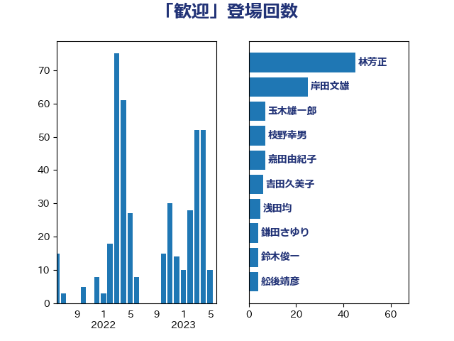

単語「歓迎」

| 林芳正 | 自由民主党 | 45 回 |
| 岸田文雄 | 自由民主党 | 25 回 |
| 玉木雄一郎 | 国民民主党 | 7 回 |
| 枝野幸男 | 立憲民主党 | 7 回 |
| 嘉田由紀子 | 無所属 | 7 回 |
| 吉田久美子 | 公明党 | 6 回 |
| 浅田均 | 日本維新の会 | 5 回 |
| 鎌田さゆり | 立憲民主党 | 4 回 |
| 鈴木俊一 | 自由民主党 | 4 回 |
| 舩後靖彦 | れいわ新選組 | 4 回 |
| 細田博之 | 自由民主党 | 4 回 |
| 岡本あき子 | 立憲民主党 | 4 回 |
| 山井和則 | 立憲民主党 | 4 回 |
| 小熊慎司 | 立憲民主党 | 4 回 |
| 齋藤健 | 自由民主党 | 3 回 |
| 長友慎治 | 国民民主党 | 3 回 |
| 足立康史 | 日本維新の会 | 3 回 |
| 萩生田光一 | 自由民主党 | 3 回 |
| 浜田聡 | NHK党 | 3 回 |
| 森山浩行 | 立憲民主党 | 3 回 |
| 松原仁 | 立憲民主党 | 3 回 |
| 平林晃 | 公明党 | 3 回 |
| 山口壯 | 自由民主党 | 3 回 |
| 奥野総一郎 | 立憲民主党 | 3 回 |
| 太田房江 | 自由民主党 | 3 回 |
| 天畠大輔 | れいわ新選組 | 3 回 |
| 塩崎彰久 | 自由民主党 | 3 回 |
| 堀井巌 | 自由民主党 | 3 回 |
| 城内実 | 自由民主党 | 3 回 |
| 吉田宣弘 | 公明党 | 3 回 |
| 高木啓 | 自由民主党 | 2 回 |
| 高木かおり | 日本維新の会 | 2 回 |
| 青柳仁士 | 日本維新の会 | 2 回 |
| 青山大人 | 立憲民主党 | 2 回 |
| 鈴木敦 | 国民民主党 | 2 回 |
| 金村龍那 | 日本維新の会 | 2 回 |
| 赤嶺政賢 | 日本共産党 | 2 回 |
| 西村明宏 | 自由民主党 | 2 回 |
| 西村康稔 | 自由民主党 | 2 回 |
| 羽田次郎 | 立憲民主党 | 2 回 |
| 紙智子 | 日本共産党 | 2 回 |
| 笠浩史 | 無所属 | 2 回 |
| 穀田恵二 | 日本共産党 | 2 回 |
| 福島みずほ | 社会民主党 | 2 回 |
| 石井章 | 日本維新の会 | 2 回 |
| 石井正弘 | 自由民主党 | 2 回 |
| 盛山正仁 | 自由民主党 | 2 回 |
| 牧義夫 | 立憲民主党 | 2 回 |
| 渡辺周 | 立憲民主党 | 2 回 |
| 浅野哲 | 国民民主党 | 2 回 |
| 沢田良 | 日本維新の会 | 2 回 |
| 梅村みずほ | 日本維新の会 | 2 回 |
| 柳ヶ瀬裕文 | 日本維新の会 | 2 回 |
| 新藤義孝 | 自由民主党 | 2 回 |
| 斎藤アレックス | 国民民主党 | 2 回 |
| 斉藤鉄夫 | 公明党 | 2 回 |
| 打越さく良 | 立憲民主党 | 2 回 |
| 庄子賢一 | 公明党 | 2 回 |
| 平木大作 | 公明党 | 2 回 |
| 川合孝典 | 国民民主党 | 2 回 |
| 山田勝彦 | 立憲民主党 | 2 回 |
| 山添拓 | 日本共産党 | 2 回 |
| 山本剛正 | 日本維新の会 | 2 回 |
| 山岸一生 | 立憲民主党 | 2 回 |
| 小野泰輔 | 日本維新の会 | 2 回 |
| 小沼巧 | 立憲民主党 | 2 回 |
| 小山展弘 | 立憲民主党 | 2 回 |
| 安江伸夫 | 公明党 | 2 回 |
| 大西健介 | 立憲民主党 | 2 回 |
| 塩村あやか | 立憲民主党 | 2 回 |
| 堤かなめ | 立憲民主党 | 2 回 |
| 堀場幸子 | 日本維新の会 | 2 回 |
| 国定勇人 | 自由民主党 | 2 回 |
| 国光あやの | 自由民主党 | 2 回 |
| 吉田はるみ | 立憲民主党 | 2 回 |
| 勝部賢志 | 立憲民主党 | 2 回 |
| 倉林明子 | 日本共産党 | 2 回 |
| 井上哲士 | 日本共産党 | 2 回 |
| 三木圭恵 | 日本維新の会 | 2 回 |
| ながえ孝子 | 無所属 | 2 回 |
| 鬼木誠 | 立憲民主党 | 1 回 |
| 高橋千鶴子 | 日本共産党 | 1 回 |
| 高市早苗 | 自由民主党 | 1 回 |
| 馬場伸幸 | 日本維新の会 | 1 回 |
| 阿部知子 | 立憲民主党 | 1 回 |
| 長坂康正 | 自由民主党 | 1 回 |
| 鈴木馨祐 | 自由民主党 | 1 回 |
| 金子道仁 | 日本維新の会 | 1 回 |
| 野間健 | 立憲民主党 | 1 回 |
| 野田佳彦 | 立憲民主党 | 1 回 |
| 重徳和彦 | 立憲民主党 | 1 回 |
| 里見隆治 | 公明党 | 1 回 |
| 道下大樹 | 立憲民主党 | 1 回 |
| 角田秀穂 | 公明党 | 1 回 |
| 西田実仁 | 公明党 | 1 回 |
| 西岡秀子 | 国民民主党 | 1 回 |
| 藤川政人 | 自由民主党 | 1 回 |
| 藤岡隆雄 | 立憲民主党 | 1 回 |
| 藤丸敏 | 自由民主党 | 1 回 |
| 菅家一郎 | 自由民主党 | 1 回 |
| 茂木敏充 | 自由民主党 | 1 回 |
| 若林健太 | 自由民主党 | 1 回 |
| 舟山康江 | 国民民主党 | 1 回 |
| 細野豪志 | 自由民主党 | 1 回 |
| 福岡資麿 | 自由民主党 | 1 回 |
| 福山哲郎 | 立憲民主党 | 1 回 |
| 神谷裕 | 立憲民主党 | 1 回 |
| 神津たけし | 立憲民主党 | 1 回 |
| 石川香織 | 立憲民主党 | 1 回 |
| 石川博崇 | 公明党 | 1 回 |
| 石垣のりこ | 立憲民主党 | 1 回 |
| 矢倉克夫 | 公明党 | 1 回 |
| 田村貴昭 | 日本共産党 | 1 回 |
| 田嶋要 | 立憲民主党 | 1 回 |
| 田島麻衣子 | 立憲民主党 | 1 回 |
| 田名部匡代 | 立憲民主党 | 1 回 |
| 熊谷裕人 | 立憲民主党 | 1 回 |
| 滝波宏文 | 自由民主党 | 1 回 |
| 清水真人 | 自由民主党 | 1 回 |
| 浦野靖人 | 日本維新の会 | 1 回 |
| 河西宏一 | 公明党 | 1 回 |
| 櫻井周 | 立憲民主党 | 1 回 |
| 櫛渕万里 | れいわ新選組 | 1 回 |
| 柴田巧 | 日本維新の会 | 1 回 |
| 松野博一 | 自由民主党 | 1 回 |
| 松木けんこう | 立憲民主党 | 1 回 |
| 松川るい | 自由民主党 | 1 回 |
| 杉田水脈 | 自由民主党 | 1 回 |
| 杉久武 | 公明党 | 1 回 |
| 朝日健太郎 | 自由民主党 | 1 回 |
| 有村治子 | 自由民主党 | 1 回 |
| 新垣邦男 | 立憲民主党 | 1 回 |
| 掘井健智 | 日本維新の会 | 1 回 |
| 徳永久志 | 立憲民主党 | 1 回 |
| 岸真紀子 | 立憲民主党 | 1 回 |
| 岬麻紀 | 日本維新の会 | 1 回 |
| 岡田直樹 | 自由民主党 | 1 回 |
| 岡田克也 | 立憲民主党 | 1 回 |
| 山田美樹 | 自由民主党 | 1 回 |
| 山田太郎 | 自由民主党 | 1 回 |
| 山本太郎 | れいわ新選組 | 1 回 |
| 山崎誠 | 立憲民主党 | 1 回 |
| 山岡達丸 | 立憲民主党 | 1 回 |
| 山口那津男 | 公明党 | 1 回 |
| 山下芳生 | 日本共産党 | 1 回 |
| 小野寺五典 | 自由民主党 | 1 回 |
| 小西洋之 | 立憲民主党 | 1 回 |
| 小田原潔 | 自由民主党 | 1 回 |
| 小池晃 | 日本共産党 | 1 回 |
| 小林鷹之 | 自由民主党 | 1 回 |
| 小宮山泰子 | 立憲民主党 | 1 回 |
| 小倉將信 | 自由民主党 | 1 回 |
| 寺田静 | 無所属 | 1 回 |
| 寺田学 | 立憲民主党 | 1 回 |
| 宮本徹 | 日本共産党 | 1 回 |
| 宮崎政久 | 自由民主党 | 1 回 |
| 大塚耕平 | 国民民主党 | 1 回 |
| 堂込麻紀子 | 無所属 | 1 回 |
| 土田慎 | 自由民主党 | 1 回 |
| 國重徹 | 公明党 | 1 回 |
| 吉良よし子 | 日本共産党 | 1 回 |
| 吉田とも代 | 日本維新の会 | 1 回 |
| 古賀之士 | 立憲民主党 | 1 回 |
| 古川禎久 | 自由民主党 | 1 回 |
| 加藤勝信 | 自由民主党 | 1 回 |
| 佐々木さやか | 公明党 | 1 回 |
| 住吉寛紀 | 日本維新の会 | 1 回 |
| 伊藤孝恵 | 国民民主党 | 1 回 |
| 伊藤俊輔 | 立憲民主党 | 1 回 |
| 伊佐進一 | 公明党 | 1 回 |
| 仁比聡平 | 日本共産党 | 1 回 |
| 中曽根康隆 | 自由民主党 | 1 回 |
| 中川郁子 | 自由民主党 | 1 回 |
| 一谷勇一郎 | 日本維新の会 | 1 回 |
| たがや亮 | れいわ新選組 | 1 回 |
| こやり隆史 | 自由民主党 | 1 回 |